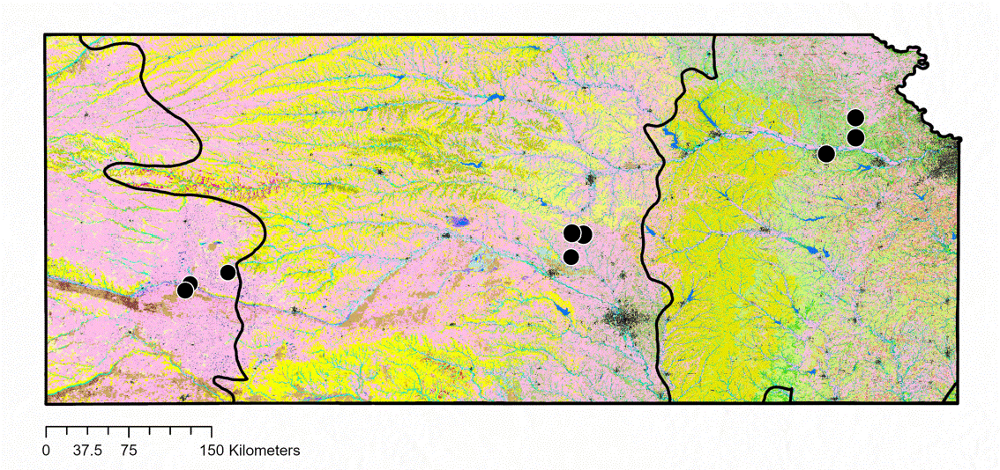
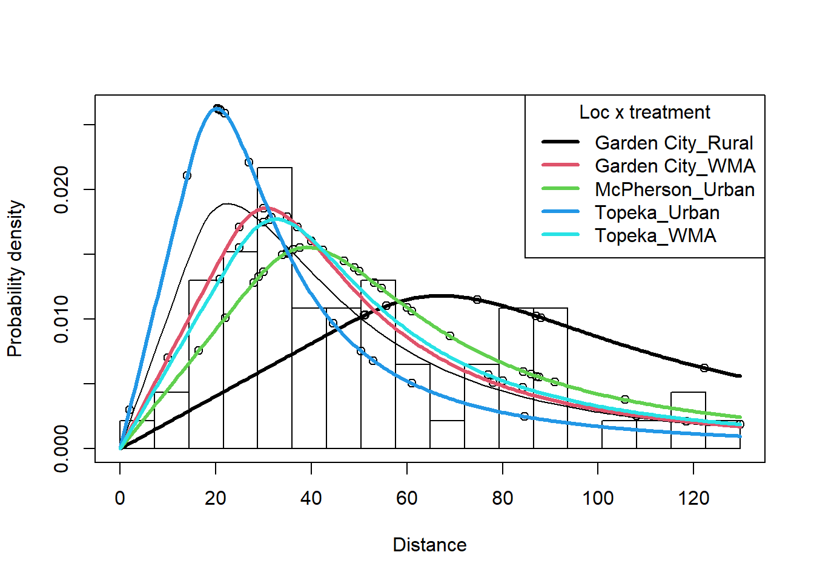
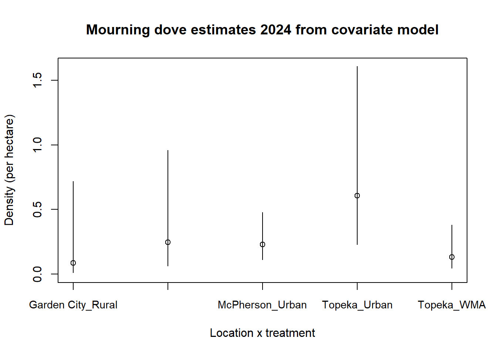
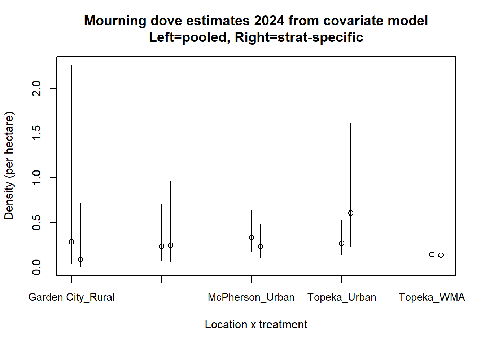

pegg <- read.csv("study_design2024.csv")Mourning doves 🕊️
1 What are mourning doves up to?
Study Locations
- Topeka (east)
- McPherson (central)
- Garden City (west)
Treatments include
- WMAs (wildlife managed areas)
- urban (developed)
- rural

2 Get acquainted with survey design
combos <- unique(pegg$Location_Treatment)
patch <- vector("numeric", length=length(combos))
point <- vector("numeric", length=length(combos))
for(i in 1:length(combos)) {
patch[i] <- length(unique(pegg[pegg$Location_Treatment==combos[i], "PatchID"]))
point[i] <- length(unique(pegg[pegg$Location_Treatment==combos[i], "PointID"]))
}
design <- data.frame(Treatment=combos, Patches=patch, Points=point)
knitr::kable(design, caption="Pegg study design 2024")| Treatment | Patches | Points |
|---|---|---|
| Garden City_Rural | 5 | 15 |
| Garden City_Urban | 24 | 55 |
| Garden City_WMA | 15 | 27 |
| Inman_WMA | 3 | 5 |
| McPherson_Rual | 1 | 1 |
| McPherson_Rural | 16 | 33 |
| McPherson_Urban | 25 | 44 |
| McPherson_WM | 3 | 8 |
| McPherson_WMA | 9 | 24 |
| Topeka_Urban | 21 | 38 |
| Topeka_WMA | 25 | 44 |
3 Get acquainted with survey data
peggdat <- read.csv("2024dovedata2.csv")Just pick one combination to see what is what
numecdo <- vector("numeric", length=length(combos))
nummodo <- vector("numeric", length=length(combos))
for(i in 1:length(combos)) {
numecdo[i] <- sum(!is.na(peggdat$Distance) &
peggdat$Species=="Eurasian Collared Dove" &
peggdat$Location_Treatment==combos[i])
nummodo[i] <- sum(!is.na(peggdat$Distance) &
peggdat$Species=="Mourning Dove" &
peggdat$Location_Treatment==combos[i])
}
detects <- data.frame(Treatment=combos, ECDOdet=numecdo, MODOdet=nummodo)
knitr::kable(detects, caption="Detections by Loc x Tmt and species")| Treatment | ECDOdet | MODOdet |
|---|---|---|
| Garden City_Rural | 0 | 7 |
| Garden City_Urban | 227 | 2 |
| Garden City_WMA | 1 | 11 |
| Inman_WMA | 0 | 0 |
| McPherson_Rual | 0 | 0 |
| McPherson_Rural | 2 | 2 |
| McPherson_Urban | 8 | 27 |
| McPherson_WM | 0 | 0 |
| McPherson_WMA | 0 | 3 |
| Topeka_Urban | 0 | 16 |
| Topeka_WMA | 0 | 10 |
Garden city urban has lots of ECDO detections
4 Sizes of study area treatment combinations
library(readxl)
sizes <- read_xlsx(path="StudyAreasAndTreatments.xlsx")
sizes$Location_Treatment <- paste(sizes$`Study Area`, sizes$Treatment, sep="_")
peggdat.area <- merge(peggdat, sizes, by="Location_Treatment", all.x=TRUE)5 Rename columns
colnames(peggdat.area)[colnames(peggdat.area) == 'Location_Treatment'] <- 'Region.Label'
colnames(peggdat.area)[colnames(peggdat.area) == 'PointID'] <- 'Sample.Label'
colnames(peggdat.area)[colnames(peggdat.area) == 'Effort_Point'] <- 'Effort'
colnames(peggdat.area)[colnames(peggdat.area) == 'hectares'] <- 'Area'
peggdat.area$Area <- as.numeric(peggdat.area$Area)
colnames(peggdat.area)[colnames(peggdat.area) == 'Distance'] <- 'distance'6 Toss unusual Location_Treatment
removethese <- c("Inman_WMA", "McPherson_Rual", "McPherson_WM")
clean.data <- peggdat.area[!(peggdat.area$Region.Label %in% removethese), ]
combo.clean <- unique(clean.data$Region.Label)
unique(clean.data$Region.Label)[1] "Garden City_Rural" "Garden City_Urban" "Garden City_WMA"
[4] "McPherson_Rural" "McPherson_Urban" "McPherson_WMA"
[7] "Topeka_Urban" "Topeka_WMA" 7 Also remove from Study_design2024
don’t think this is needed
clean.design <- pegg[!(pegg$Location_Treatment %in% removethese), ]8 Create region and sample tables
If we subset by species, we destroy all points without detections resulting in overestimation
regtab <- data.frame(Region.Label=unique(clean.data$Region.Label),
Area=unique(clean.data$Area))
gcr <- unique(clean.data[clean.data$Region.Label==combo.clean[1], "Sample.Label"])
pts.gcr <- length(gcr)
gcu <- unique(clean.data[clean.data$Region.Label==combo.clean[2], "Sample.Label"])
pts.gcu <- length(gcu)
gcw <- unique(clean.data[clean.data$Region.Label==combo.clean[3], "Sample.Label"])
pts.gcw <- length(gcw)
mr <- unique(clean.data[clean.data$Region.Label==combo.clean[4], "Sample.Label"])
pts.mr <- length(mr)
mu <- unique(clean.data[clean.data$Region.Label==combo.clean[5], "Sample.Label"])
pts.mu <- length(mu)
mw <- unique(clean.data[clean.data$Region.Label==combo.clean[6], "Sample.Label"])
pts.mw <- length(mw)
tu <- unique(clean.data[clean.data$Region.Label==combo.clean[7], "Sample.Label"])
pts.tu <- length(tu)
tw <- unique(clean.data[clean.data$Region.Label==combo.clean[8], "Sample.Label"])
pts.tw <- length(tw)
allpts <- c(gcr, gcu, gcw, mr, mu, mw, tu, tw)
regionstring <- c(rep(combo.clean[1], pts.gcr),
rep(combo.clean[2], pts.gcu),
rep(combo.clean[3], pts.gcw),
rep(combo.clean[4], pts.mr),
rep(combo.clean[5], pts.mu),
rep(combo.clean[6], pts.mw),
rep(combo.clean[7], pts.tu),
rep(combo.clean[8], pts.tw))
eff <- vector("numeric", length=length(allpts))
for(i in 1:length(allpts)) {
eff[i] <- clean.data[clean.data$Sample.Label==allpts[i], "Effort"]
}
samtab <- data.frame(Sample.Label=allpts,
Region.Label=regionstring,
Effort=eff)9 Load package and set conversion units
library(Distance)
cu <- convert_units("meter", NULL, "hectare")10 Mourning doves
10.1 Pooled detection function
modo.pool.unif <- ds(data=clean.data[clean.data$Species=="Mourning Dove",],
region_table = regtab, sample_table = samtab,
transect = "point", key="unif", truncation = "10%", convert_units = cu)
modo.pool.hn <- ds(data=clean.data[clean.data$Species=="Mourning Dove",],
region_table = regtab, sample_table = samtab,
transect = "point", key="hn", adj="herm", truncation = "10%", convert_units = cu)
modo.pool.hr <- ds(data=clean.data[clean.data$Species=="Mourning Dove",],
region_table = regtab, sample_table = samtab,
transect = "point", key="hr", adj="poly", truncation = "10%", convert_units = cu)10.2 Model criticism
knitr::kable(summarize_ds_models(modo.pool.unif, modo.pool.hn, modo.pool.hr)[,c(1,3:7)],
digits=3, row.names = FALSE,
caption="Model criticism for 8 stratum pooled detection function models.")| Model | Formula | C-vM p-value | \(\hat{P_a}\) | se(\(\hat{P_a}\)) | \(\Delta\)AIC |
|---|---|---|---|---|---|
| ~1 | 0.888 | 0.162 | 0.041 | 0.000 | |
| NA | 0.245 | 0.198 | 0.022 | 3.757 | |
| ~1 | 0.121 | 0.215 | 0.023 | 5.065 |
10.3 Location x treatment specific detection function
modo.hn.region <- ds(data=clean.data[clean.data$Species=="Mourning Dove",],
region_table = regtab, sample_table = samtab,
transect = "point", key="hn",
formula=~Region.Label,
truncation = "10%", convert_units = cu)
modo.hr.region <- ds(data=clean.data[clean.data$Species=="Mourning Dove",],
region_table = regtab, sample_table = samtab,
transect = "point", key="hr",
formula=~Region.Label,
truncation = "10%", convert_units = cu)knitr::kable(summarize_ds_models(modo.hn.region, modo.hr.region)[,c(1,3:7)],
digits=3, row.names = FALSE,
caption="Model criticism for 8 stratum-specific detection function models.")| Model | Formula | C-vM p-value | \(\hat{P_a}\) | se(\(\hat{P_a}\)) | \(\Delta\)AIC |
|---|---|---|---|---|---|
| ~Region.Label | 0.550 | 0.141 | 319.606 | 0.000 | |
| ~Region.Label | 0.481 | 0.158 | 901.717 | 4.061 |
Something is not right about SE(Pa) for both models, suggesting convergence trouble
knitr::kable(summary(modo.hr.region$ddf)$coeff$key.scale, digits=4,
caption="Problems in SEs of beta coefficients")| estimate | se | |
|---|---|---|
| (Intercept) | 4.3687 | 0.3521 |
| Region.LabelGarden City_Urban | 0.2568 | 7.0672 |
| Region.LabelGarden City_WMA | -0.7177 | 0.4575 |
| Region.LabelMcPherson_Rural | 1.3277 | 64622.7824 |
| Region.LabelMcPherson_Urban | -0.4431 | 0.3848 |
| Region.LabelMcPherson_WMA | -0.6397 | 99999.9995 |
| Region.LabelTopeka_Urban | -1.1236 | 0.4208 |
| Region.LabelTopeka_WMA | -0.6590 | 0.4339 |
McPherson Rural and WMA, as well as Garden City Urban causing problems
Probably not a surprise given the numbers of detections in those locations x treatments
knitr::kable(modo.hr.region$dht$individuals$summary, digits=3,
caption="MODO by location X treatment. Pay attention to Effort, n (detections) and k (points) columns.")| Region | Area | CoveredArea | Effort | n | k | ER | se.ER | cv.ER |
|---|---|---|---|---|---|---|---|---|
| Garden City_Rural | 20.230 | 166.237 | 26 | 7 | 15 | 0.269 | 0.332 | 1.232 |
| Garden City_Urban | 2284.370 | 703.310 | 110 | 2 | 55 | 0.018 | 0.013 | 0.701 |
| Garden City_WMA | 1521.618 | 230.174 | 36 | 8 | 27 | 0.222 | 0.116 | 0.523 |
| McPherson_Rural | 1007.840 | 300.505 | 47 | 2 | 33 | 0.043 | 0.033 | 0.786 |
| McPherson_Urban | 1827.561 | 466.742 | 73 | 24 | 44 | 0.329 | 0.079 | 0.240 |
| McPherson_WMA | 539.040 | 262.143 | 41 | 1 | 24 | 0.024 | 0.021 | 0.854 |
| Topeka_Urban | 19250.760 | 402.805 | 63 | 16 | 38 | 0.254 | 0.062 | 0.243 |
| Topeka_WMA | 4249.200 | 479.530 | 75 | 10 | 44 | 0.133 | 0.040 | 0.298 |
| Total | 30700.619 | 3011.447 | 471 | 70 | 280 | 0.212 | 0.040 | 0.188 |
See Section 11 eliminate Garden City_Urban, McPherson_Rural and McPherson_WMA for a more reliable model resulting from elimination of strata with very few detections.
For the moment, show estimates from pooled HR model
knitr::kable(modo.pool.hr$dht$individuals$D[,1:6], digits=3,
caption="MODO density (per hectare) using pooled detection function across location x treatment combos")| Label | Estimate | se | cv | lcl | ucl |
|---|---|---|---|---|---|
| Garden City_Rural | 0.260 | 0.327 | 1.257 | 0.033 | 2.069 |
| Garden City_Urban | 0.018 | 0.013 | 0.744 | 0.005 | 0.066 |
| Garden City_WMA | 0.215 | 0.125 | 0.581 | 0.072 | 0.639 |
| McPherson_Rural | 0.041 | 0.034 | 0.825 | 0.010 | 0.177 |
| McPherson_Urban | 0.318 | 0.110 | 0.348 | 0.163 | 0.621 |
| McPherson_WMA | 0.024 | 0.021 | 0.890 | 0.005 | 0.113 |
| Topeka_Urban | 0.245 | 0.086 | 0.350 | 0.125 | 0.482 |
| Topeka_WMA | 0.129 | 0.050 | 0.390 | 0.061 | 0.272 |
| Total | 0.205 | 0.064 | 0.314 | 0.111 | 0.376 |
- Note the magnitude of CVs for
Garden City_Rural,Garden City_Urban,McPherson_RuralandMcPherson_WMA - Most of those large CVs were caused by very low density, but that is not the case for
Garden City_Rural.
11 Remove GCR, MR, MW
removemore <- c("Garden City_Urban", "McPherson_Rural", "McPherson_WMA")
cleaner.data <- clean.data[!(clean.data$Region.Label %in% removemore), ]
combo.more.clean <- unique(cleaner.data$Region.Label)
unique(cleaner.data$Region.Label)[1] "Garden City_Rural" "Garden City_WMA" "McPherson_Urban"
[4] "Topeka_Urban" "Topeka_WMA" Because our strata have changed, we need to reconstruct our region and sample tables
regtab5strata <- data.frame(Region.Label=unique(cleaner.data$Region.Label),
Area=unique(cleaner.data$Area))11.1 Reconstruct sample table
Borrowing from our earlier code and removing the unwanted strata
allpts5strat <- c(gcr, gcw, mu, tu, tw)
regionstring5 <- c(rep(combo.more.clean[1], pts.gcr),
rep(combo.more.clean[2], pts.gcw),
rep(combo.more.clean[3], pts.mu),
rep(combo.more.clean[4], pts.tu),
rep(combo.more.clean[5], pts.tw))
eff5 <- vector("numeric", length=length(allpts5strat))
for(i in 1:length(allpts5strat)) {
eff5[i] <- cleaner.data[cleaner.data$Sample.Label==allpts5strat[i], "Effort"]
}
samtab5 <- data.frame(Sample.Label=allpts5strat,
Region.Label=regionstring5,
Effort=eff5)12 Refit stratum covariate models to remaining five strata
12.1 Pooled detection function
modo.pool.unif5 <- ds(data=cleaner.data[cleaner.data$Species=="Mourning Dove",],
region_table = regtab5strata, sample_table = samtab5,
transect = "point", key="unif", truncation = "10%", convert_units = cu)
modo.pool.hn5 <- ds(data=cleaner.data[cleaner.data$Species=="Mourning Dove",],
region_table = regtab5strata, sample_table = samtab5,
transect = "point", key="hn", adj="herm", truncation = "10%", convert_units = cu)
modo.pool.hr5 <- ds(data=cleaner.data[cleaner.data$Species=="Mourning Dove",],
region_table = regtab5strata, sample_table = samtab5,
transect = "point", key="hr", adj="poly", truncation = "10%", convert_units = cu)12.2 Model criticism of 5 stratum pooled models
knitr::kable(summarize_ds_models(modo.pool.unif5, modo.pool.hn5, modo.pool.hr5)[,c(1,3:7)],
digits=3, row.names = FALSE,
caption="Model criticism for 5 stratum pooled detection function models.")| Model | Formula | C-vM p-value | \(\hat{P_a}\) | se(\(\hat{P_a}\)) | \(\Delta\)AIC |
|---|---|---|---|---|---|
| ~1 | 0.916 | 0.179 | 0.045 | 0.000 | |
| NA | 0.858 | 0.155 | 0.029 | 3.018 | |
| ~1 | 0.186 | 0.222 | 0.026 | 3.889 |
12.3 Stratum-specific detection function
modo.hn.region5 <- ds(data=cleaner.data[cleaner.data$Species=="Mourning Dove",],
region_table = regtab5strata, sample_table = samtab5,
transect = "point", key="hn",
formula=~Region.Label,
truncation = "10%", convert_units = cu)
modo.hr.region5 <- ds(data=cleaner.data[cleaner.data$Species=="Mourning Dove",],
region_table = regtab5strata, sample_table = samtab5,
transect = "point", key="hr",
formula=~Region.Label,
truncation = "10%", convert_units = cu)knitr::kable(summarize_ds_models(modo.hn.region, modo.hr.region)[,c(1,3:7)],
digits=3, row.names = FALSE,
caption="Model criticism for 5 stratum-specific detection function models.")| Model | Formula | C-vM p-value | \(\hat{P_a}\) | se(\(\hat{P_a}\)) | \(\Delta\)AIC |
|---|---|---|---|---|---|
| ~Region.Label | 0.550 | 0.141 | 319.606 | 0.000 | |
| ~Region.Label | 0.481 | 0.158 | 901.717 | 4.061 |
12.3.1 Look for signs of convergence problems in covariate \(\hat{\beta_i}\) estimates
bob <- summary(modo.hr.region5$ddf)
knitr::kable(bob$coeff$key.scale, digits=4)| estimate | se | |
|---|---|---|
| (Intercept) | 4.4216 | 0.3798 |
| Region.LabelGarden City_WMA | -0.7825 | 0.4990 |
| Region.LabelMcPherson_Urban | -0.5401 | 0.4197 |
| Region.LabelTopeka_Urban | -1.1985 | 0.4614 |
| Region.LabelTopeka_WMA | -0.7207 | 0.4730 |
No reason to be concerned about convergence, so make inference from this model.
12.4 Repeat summary table for 5 strata
knitr::kable(modo.hr.region5$dht$individuals$summary, digits=3,
caption="MODO by location X treatment for five strata analysis. Pay attention to Effort, n (detections) and k (points) columns.")| Region | Area | CoveredArea | Effort | n | k | ER | se.ER | cv.ER |
|---|---|---|---|---|---|---|---|---|
| Garden City_Rural | 20.230 | 137.405 | 26 | 7 | 15 | 0.269 | 0.332 | 1.232 |
| Garden City_WMA | 1521.618 | 190.253 | 36 | 8 | 27 | 0.222 | 0.116 | 0.523 |
| McPherson_Urban | 1827.561 | 385.792 | 73 | 23 | 44 | 0.315 | 0.071 | 0.224 |
| Topeka_Urban | 19250.760 | 332.943 | 63 | 16 | 38 | 0.254 | 0.062 | 0.243 |
| Topeka_WMA | 4249.200 | 396.361 | 75 | 10 | 44 | 0.133 | 0.040 | 0.298 |
| Total | 26869.369 | 1442.755 | 273 | 64 | 168 | 0.237 | 0.045 | 0.192 |
12.5 Examine the shape of the stratum-specific probability density functions
plot(modo.hr.region5, pdf=TRUE, nc=18, pl.col="white")
for(i in 1:length(combo.more.clean)) {
add_df_covar_line(modo.hr.region5, data=data.frame(Region.Label=combo.more.clean[i]),
lwd=3, lty=1, col=i, pdf=TRUE)
}
legend("topright", title="Loc x treatment", legend = combo.more.clean,
lwd=3, lty=1, col=1:5)
12.6 Finally the density estimates
knitr::kable(modo.hr.region5$dht$individuals$D[,1:6], digits=3,
caption="MODO density (per hectare) using stratum-specific detection function across five location x treatment combinations.")| Label | Estimate | se | cv | lcl | ucl |
|---|---|---|---|---|---|
| Garden City_Rural | 0.087 | 0.115 | 1.322 | 0.011 | 0.717 |
| Garden City_WMA | 0.247 | 0.190 | 0.767 | 0.064 | 0.959 |
| McPherson_Urban | 0.230 | 0.088 | 0.381 | 0.111 | 0.479 |
| Topeka_Urban | 0.606 | 0.316 | 0.522 | 0.228 | 1.607 |
| Topeka_WMA | 0.133 | 0.076 | 0.570 | 0.046 | 0.382 |
| Total | 0.485 | 0.229 | 0.473 | 0.198 | 1.185 |
simplename <- modo.hr.region5$dht$individuals$D
simplename$index <- 1:dim(simplename)[1]
yrange <- range(c(simplename$lcl, simplename$ucl))
plot(simplename$index[1:(max(simplename$index)-1)],
simplename$Estimate[1:(max(simplename$index)-1)],
ylim=c(0, yrange[2]), xaxt="n",
xlab="Location x treatment", ylab="Density (per hectare)",
main="Mourning dove estimates 2024 from covariate model")
s <- seq((max(simplename$index)-1))
segments(simplename$index[s], simplename$lcl[s], simplename$index[s], simplename$ucl[s])
axis(1, at=1:(max(simplename$index)-1), labels=simplename$Label[1:(max(simplename$index)-1)], cex.axis=0.9)
13 Final comments
The strength of the Location x treatment effect upon detectability, while present is not very strong. Therefore, you might have two questions:
- would model selection differ if a different information-theoretic metric been used and
- would inference about mourning dove densities have been different had a simpler model (that assumes no difference in detectability between
Location x treatmentcombinations).
Let’s investigate.
13.1 Alternative model selection metric
The tools for employing different metrics exist, but need to be recrafted a bit for our purposes:
altmetric <- function(modelobj) {
nval <- length(modelobj$ddf$fitted)
AICcall <- AIC(modelobj)
k <- AICcall$df
AICval <- AICcall$AIC
AICc <- AICval + (2*k*(k+1)) / (nval-k-1)
BIC <- AIC(modelobj, k = log(nval))$AIC
return(c(AICval, AICc, BIC))
}Pass each of our five models (three without covariates and two using the stratum as covariate) applied to the five-stratum variant of our analysis to our new tool, admittedly in a clumsy fashion.
results <- data.frame(NULL)
results <- rbind(results, altmetric(modo.pool.unif5))
results <- rbind(results, altmetric(modo.pool.hn5))
results <- rbind(results, altmetric(modo.pool.hr5))
results <- rbind(results, altmetric(modo.hn.region5))
results <- rbind(results, altmetric(modo.hr.region5))
colnames(results) <- c("AIC", "AICc", "BIC")
rownames(results) <- c("modo.pool.unif5","modo.pool.hn5","modo.pool.hr5",
"modo.hn.region5","modo.hr.region5")
knitr::kable(results[order(results$AIC),], digits=1,
row.names = TRUE, caption="Models ordered by AIC")| AIC | AICc | BIC | |
|---|---|---|---|
| modo.hr.region5 | 598.6 | 600.1 | 611.5 |
| modo.hn.region5 | 601.2 | 602.3 | 612.0 |
| modo.pool.hr5 | 603.8 | 604.0 | 608.1 |
| modo.pool.unif5 | 606.8 | 607.2 | 613.3 |
| modo.pool.hn5 | 607.7 | 607.7 | 609.8 |
knitr::kable(results[order(results$AICc),], digits=1,
row.names = TRUE, caption="Models ordered by AICc") | AIC | AICc | BIC | |
|---|---|---|---|
| modo.hr.region5 | 598.6 | 600.1 | 611.5 |
| modo.hn.region5 | 601.2 | 602.3 | 612.0 |
| modo.pool.hr5 | 603.8 | 604.0 | 608.1 |
| modo.pool.unif5 | 606.8 | 607.2 | 613.3 |
| modo.pool.hn5 | 607.7 | 607.7 | 609.8 |
knitr::kable(results[order(results$BIC),], digits=1,
row.names = TRUE, caption="Models ordered by BIC")| AIC | AICc | BIC | |
|---|---|---|---|
| modo.pool.hr5 | 603.8 | 604.0 | 608.1 |
| modo.pool.hn5 | 607.7 | 607.7 | 609.8 |
| modo.hr.region5 | 598.6 | 600.1 | 611.5 |
| modo.hn.region5 | 601.2 | 602.3 | 612.0 |
| modo.pool.unif5 | 606.8 | 607.2 | 613.3 |
The upshot of changing metrics is that using AICc vs AIC results in the same model choice, whereas use of BIC leads to the selection of a pooled detection function (with a hazard rate key).
13.2 How much does model choice influence our estimates
pooled <- modo.pool.hr5$dht$individuals$D[1:5, ]
strat.spec <- modo.hr.region5$dht$individuals$D[1:5, ]
# interleave
library(gdata)
merged <- interleave(pooled, strat.spec)
simplename <- merged
simplename$index <- c(1,1.1, 2,2.1, 3,3.1, 4,4.1, 5,5.1)
yrange <- range(c(simplename$lcl, simplename$ucl))
plot(simplename$index,
simplename$Estimate[1:10],
ylim=c(0, yrange[2]), xaxt="n",
xlab="Location x treatment", ylab="Density (per hectare)",
main="Mourning dove estimates 2024 from covariate model\nLeft=pooled, Right=strat-specific")
s <- seq(1:10)
segments(simplename$index[s], simplename$lcl[s], simplename$index[s], simplename$ucl[s])
axis(1, at=1:5,
labels=simplename$Label[seq(1, 9, by=2)],
cex.axis=0.9)
The estimates based upon a pooled detection function resemble one another; differences in detectability between strata are homogenised. Interestingly, Garden City_Rural is the stratum with fewest detections (7) and its density estimate shows the greatest sensitivity to model choice; however uncertainty in the density estimate swamps and perceived difference in density estimates. Part of the explanation for this lies in the profound variability in encounter rates between stations in Garden City_Rural.